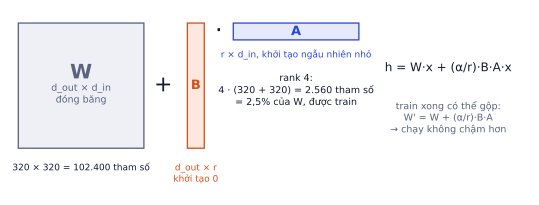
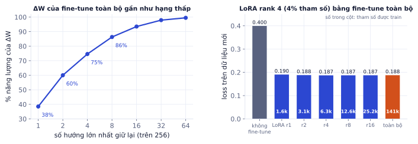

Bài 1
Đếm tham số LoRA
tính tayMột ma trận chiếu 768×768, LoRA rank 8.
Lời giải
8·(768 + 768) = 12.288 so với 589.824: khoảng 2%. Với rank 4 còn 1%. Áp lên mọi lớp attention của U-Net, tổng LoRA chỉ vài triệu tham số.
Fine-tune toàn bộ Stable Diffusion cần GPU lớn và tạo ra file vài GB cho mỗi phong cách. LoRA chỉ train thêm vài trăm nghìn tới vài triệu tham số nhỏ gắn vào model đóng băng, chạy được trên Colab T4 và cho file vài MB. Đây là cách cộng đồng tạo hàng trăm nghìn phong cách và nhân vật riêng. Bài này giải thích vì sao LoRA hiệu quả (kèm thí nghiệm thật), cách chuẩn bị dữ liệu, và cách phát hiện học thuộc. Phần thực hành, bạn train một LoRA phong cách riêng cho ứng dụng tạo ảnh của mình.
"Tạo ảnh sản phẩm theo phong cách thương hiệu của shop" là yêu cầu điển hình của khách hàng thuê freelancer AI. LoRA là công cụ chuẩn cho việc này: rẻ, nhanh, file nhỏ dễ giao, và cũng là kỹ thuật bạn sẽ dùng lại cho LLM ở P6.1.
Fine-tune toàn bộ U-Net của SD 1.5 nghĩa là cập nhật 859,5 triệu tham số. Với optimizer Adam, mỗi tham số cần thêm 2 trạng thái (momentum và variance) và gradient, nên bộ nhớ train dễ vượt 12–16 GB, quá sức GPU miễn phí. Mỗi phong cách lại cho ra một bản model đầy đủ khoảng 1,7 GB (fp16). Mười khách hàng, mười phong cách là 17 GB chỉ để lưu.
Fine-tune thay ma trận trọng số W (kích thước d_out × d_in) bằng W + ΔW. Quan sát thực nghiệm (Hu và cộng sự, 2021): ΔW cần để thích nghi với một tác vụ mới thường có hạng thấp, tức là gần như biểu diễn được bằng tích hai ma trận mỏng:
ΔW = B · A B: d_out × r, A: r × d_in, r rất nhỏ (4, 8, 16)
h = W·x + (α/r) · B·A·x

| Chi tiết | Lý do |
|---|---|
| W đóng băng, chỉ train A và B | số tham số train là r·(d_in + d_out) thay vì d_in·d_out |
| B khởi tạo bằng 0 | lúc đầu ΔW = 0, model y hệt bản gốc; train bắt đầu từ đúng điểm xuất phát |
| A khởi tạo ngẫu nhiên nhỏ | nếu cả hai bằng 0 thì gradient của cả hai đều bằng 0, không học được |
| hệ số α/r | giữ độ lớn cập nhật ổn định khi đổi r; khi dùng còn nhân thêm "scale" để chỉnh độ mạnh |
| gộp được | sau khi train, W' = W + (α/r)·B·A: chạy không chậm hơn model gốc |
Một ma trận chiếu 320×320 trong U-Net (mức độ phân giải cao nhất), LoRA rank 4:
Gắn LoRA rank 4 vào mọi ma trận Q, K, V, O của attention trong U-Net SD 1.5 (đã đếm bằng diffusers): tổng 797.184 tham số, khoảng 1,6 MB ở fp16, so với 1,72 GB của U-Net. Nhỏ hơn khoảng 1000 lần.
Lấy model diffusion đã train trên xoắn ốc (P5.2, MLP 4 lớp, 141 nghìn tham số), fine-tune sang dữ liệu mới hình "hai trăng khuyết" bằng hai cách, cùng 3000 bước:

Kết quả cho thấy đúng giả thuyết của LoRA: thay đổi cần thiết tập trung vào vài hướng, nên train vài hướng đó là đủ. Thậm chí rank 1 (1,6 nghìn tham số) đã đạt 0.190.
import torch, torch.nn as nn
class LoRALinear(nn.Module):
def __init__(self, base, r=8, alpha=16):
super().__init__()
self.base = base.requires_grad_(False) # đóng băng W
self.A = nn.Parameter(torch.randn(r, base.in_features) * 0.01)
self.B = nn.Parameter(torch.zeros(base.out_features, r)) # B = 0: ban đầu không đổi gì
self.scale = alpha / r
def forward(self, x):
return self.base(x) + self.scale * (x @ self.A.T @ self.B.T)
layer = LoRALinear(nn.Linear(320, 320), r=4, alpha=8)
x = torch.randn(3, 320)
print("tham số được train:", sum(p.numel() for p in layer.parameters() if p.requires_grad)) # 4·(320+320) = 2560
print("lúc đầu giống hệt lớp gốc:", torch.allclose(layer(x), layer.base(x))) # vì B = 0
tham số được train: 2560 lúc đầu giống hệt lớp gốc: True
(Đây là đúng lớp dùng trong thí nghiệm. Bài tập code yêu cầu thêm hàm merge() và kiểm tra.)
Rank càng cao càng tốt? Không. Ở thí nghiệm trên, rank 16 không tốt hơn rank 4. Rank cao tăng khả năng học thuộc khi dữ liệu ít (20–50 ảnh). Bắt đầu với rank 4–8 cho phong cách, 16–32 cho đối tượng phức tạp, chỉ tăng khi thấy LoRA "không học nổi".
LoRA thường được gắn vào các ma trận chiếu Q, K, V và đầu ra O của attention trong U-Net (trong diffusers là to_q, to_k, to_v, to_out.0), cả self-attention lẫn cross-attention. Đôi khi gắn thêm vào text encoder để model hiểu từ kích hoạt tốt hơn.
Cross-attention là nơi chữ nối với ảnh (P5.3), nên LoRA ở đây học rất hiệu quả "từ này nghĩa là phong cách này". Self-attention điều khiển bố cục và kết cấu.
Khi sinh ảnh, hệ số scale nhân thêm vào phần LoRA:
h = W·x + scale · (α/r) · B·A·x
LoRA train với α = 8, r = 4, nên α/r = 2. Khi sinh với scale 0.5, phần LoRA được nhân 0.5 · 2 = 1. Với scale 0: model gốc. Với scale 1.0: đúng như lúc train. Scale 0.6–0.8 thường cho phong cách rõ mà vẫn giữ khả năng làm theo prompt của model gốc.
Trong diffusers: pipe.load_lora_weights("thu_muc_lora"), rồi truyền cross_attention_kwargs={"scale": 0.7} khi gọi pipeline. Có thể nạp nhiều LoRA và trộn (một LoRA phong cách + một LoRA đối tượng), mỗi cái một độ mạnh.
| DreamBooth (đối tượng) | Style LoRA (phong cách) | |
|---|---|---|
| Dạy model | một đối tượng cụ thể: chiếc ghế của bạn, một nhân vật | một phong cách: màu nước, ảnh sản phẩm nền trắng |
| Dữ liệu | 5–20 ảnh của đối tượng, nhiều góc, nhiều bối cảnh | 20–100 ảnh cùng phong cách, nội dung đa dạng |
| Prompt khi train | "a photo of sks chair" (từ hiếm làm định danh) | chú thích mô tả nội dung + từ kích hoạt phong cách |
| Rủi ro | model quên lớp chung ("chair" nào cũng thành chiếc ghế của bạn) | học thuộc nội dung thay vì phong cách |
Vì sao dùng từ hiếm như "sks". Từ đó gần như không mang nghĩa gì với model, nên LoRA có thể gán nghĩa mới ("chiếc ghế cụ thể này") mà không phá nghĩa của từ thông dụng. Dùng "my chair" thì LoRA phải sửa nghĩa của "my" và "chair", ảnh hưởng mọi prompt có hai từ đó.
Prior preservation trong DreamBooth: dùng model gốc sinh thêm 100–200 ảnh lớp chung ("a photo of chair"), train kèm với ảnh của bạn. Loss trên ảnh lớp chung giữ cho model không quên "ghế" nói chung là gì.
Đây là phần quyết định chất lượng LoRA nhiều nhất, hơn mọi siêu tham số.
Nguyên tắc: ảnh phải đa dạng ở những gì bạn không muốn model học (nền, góc chụp, loại đồ vật, ánh sáng), và nhất quán ở những gì bạn muốn (phong cách, hoặc chính đối tượng).
Chú thích: với style LoRA, mô tả nội dung ảnh rồi thêm từ kích hoạt. Model gán mọi thứ không được mô tả vào từ kích hoạt.
Hai cách chú thích cùng một ảnh sản phẩm (đèn gốm trên nền trắng, bóng đổ mềm):
| Chú thích | Model học được gì từ "tthstyle" |
|---|---|
| "tthstyle" | cả đèn gốm, nền trắng, bóng mềm: sinh "a sofa, tthstyle" có thể ra một cái đèn |
| "a ceramic table lamp, tthstyle" | phần không được mô tả: nền trắng, bóng mềm, ánh sáng studio (đúng thứ bạn muốn) |
Chuẩn bị ảnh:
Số bước = (số ảnh / batch size) × số epoch.
30 ảnh, batch size 1, 25 epoch → 30 × 25 = 750 bước, mỗi ảnh được nhìn 25 lần. Với learning rate 1e-4 và rank 8, đây là mức hợp lý cho style LoRA. Lưu checkpoint mỗi 250 bước để chọn bản tốt nhất thay vì chỉ lấy bản cuối.
| Dấu hiệu | Nguyên nhân thường gặp | Sửa |
|---|---|---|
| Mọi ảnh giống ảnh train, đổi prompt không đổi bố cục | train quá lâu, rank cao, ít ảnh | giảm số bước hoặc lr, lấy checkpoint sớm hơn |
| Đối tượng lạ xuất hiện trong mọi ảnh | dữ liệu một loại, chú thích thiếu | thêm ảnh đa dạng, chú thích nội dung |
| Phong cách mờ nhạt | train chưa đủ, scale thấp | thêm bước, tăng scale khi dùng |
| Màu cháy, ảnh vỡ | lr quá cao | giảm lr (1e-4 → 5e-5) |
Theo dõi trong lúc train: sau mỗi vài trăm bước, sinh ảnh với prompt chưa từng thấy và cùng seed. Loss của diffusion dao động rất mạnh (do t ngẫu nhiên) nên gần như vô dụng để phát hiện overfit; nhìn ảnh mẫu mới là cách đáng tin.
Kiểm tra học thuộc sau khi train: với mỗi ảnh sinh ra, tính embedding CLIP và tìm ảnh train gần nhất. Độ tương đồng cosine rất cao (trên khoảng 0.95) là dấu hiệu chép lại, cần xem bằng mắt.
Bản quyền và quyền hình ảnh. Chỉ train trên ảnh bạn có quyền dùng: ảnh tự chụp, ảnh khách hàng cung cấp kèm cam kết quyền, ảnh có giấy phép rõ ràng. LoRA bắt chước phong cách của một họa sĩ còn sống hoặc khuôn mặt người thật có rủi ro pháp lý và đạo đức. Ghi nguồn dữ liệu vào model card khi giao cho khách.
Ghi nhớ: LoRA giỏi dạy model một khái niệm hẹp với ít dữ liệu. Muốn model giỏi hẳn một miền mới (ảnh y tế), cần nhiều dữ liệu và fine-tune sâu hơn.
Ma trận 320×320, LoRA rank 4, α = 8.
| Chủ đề | Ý chính |
|---|---|
| Vì sao LoRA | ΔW gần như hạng thấp; train A, B mỏng, W đóng băng |
| Khởi tạo | B = 0 nên bắt đầu đúng bằng model gốc |
| Gắn ở đâu | Q, K, V, O của attention trong U-Net (đôi khi text encoder) |
| Dùng | load_lora_weights, độ mạnh qua scale, trộn được nhiều LoRA |
| DreamBooth / style | đối tượng cụ thể với từ hiếm / phong cách với chú thích nội dung |
| Dữ liệu | đa dạng thứ không muốn học, nhất quán thứ muốn học |
| Overfit | theo dõi bằng ảnh mẫu với prompt mới; kiểm tra học thuộc bằng CLIP |
| Thuật ngữ | Nghĩa |
|---|---|
| LoRA | Low-Rank Adaptation, thêm ΔW = B·A hạng thấp |
| rank (r) | số cột của B / số hàng của A |
| α (alpha) | hệ số co giãn, phần LoRA nhân α/r |
| merge | gộp B·A vào W sau khi train |
| SVD | phân tích giá trị suy biến, tìm các hướng chính của ma trận |
| DreamBooth | fine-tune dạy model một đối tượng cụ thể |
| trigger word | từ kích hoạt LoRA trong prompt |
| prior preservation | train kèm ảnh lớp chung để model không quên |
| overfitting / memorization | học thuộc dữ liệu train |
Một ma trận chiếu 768×768, LoRA rank 8.
8·(768 + 768) = 12.288 so với 589.824: khoảng 2%. Với rank 4 còn 1%. Áp lên mọi lớp attention của U-Net, tổng LoRA chỉ vài triệu tham số.
LoRA có α = 16, r = 8, tổng 3 triệu tham số lưu fp16 (1 MB = 10⁶ byte).
16/8 = 2. 3·10⁶ × 2 byte = 6 MB, so với khoảng 2 GB của cả model ở fp16.
20 ảnh, batch size 2, train 80 epoch.
20/2 = 10 bước mỗi epoch, nhân 80 = 800 bước, mỗi ảnh được dùng 80 lần. DreamBooth thường cần 400–1200 bước với tập nhỏ; nhiều hơn dễ học thuộc.
Bạn train style LoRA "ảnh sản phẩm nội thất nền trắng" trên 30 ảnh, toàn ảnh bàn trang điểm. Khi sinh "a sofa, [từ kích hoạt]", kết quả ra một chiếc bàn trang điểm. Vì sao? Sửa thế nào?
Dữ liệu chỉ có một loại sản phẩm và chú thích không mô tả nội dung, nên model gán "bàn trang điểm" vào từ kích hoạt thay vì học phong cách. Sửa: thu thập ảnh nhiều loại nội thất (ghế, sofa, kệ, đèn) cùng phong cách; chú thích mô tả nội dung từng ảnh ("a sofa on white background"); giảm số bước nếu vẫn học thuộc; kiểm tra bằng prompt đối tượng không có trong tập train.
Viết LoRALinear bọc một nn.Linear có sẵn: đóng băng lớp gốc, thêm A (khởi tạo ngẫu nhiên nhỏ) và B (khởi tạo 0), hệ số α/r, và hàm merge() gộp vào trọng số gốc. Kiểm tra: ngay sau khi khởi tạo, đầu ra bằng lớp gốc; sau merge(), đầu ra không đổi.
import torch, torch.nn as nn
class LoRALinear(nn.Module):
def __init__(self, base: nn.Linear, r=8, alpha=16):
super().__init__()
self.base, self.scale = base, alpha / r
for p in self.base.parameters():
p.requires_grad = False
self.A = nn.Parameter(torch.randn(r, base.in_features) * 0.01)
self.B = nn.Parameter(torch.zeros(base.out_features, r))
self.merged = False
def forward(self, x):
out = self.base(x)
return out if self.merged else out + self.scale * (x @ self.A.T @ self.B.T)
@torch.no_grad()
def merge(self):
self.base.weight += self.scale * self.B @ self.A
self.merged = True
base = nn.Linear(768, 768)
x = torch.randn(4, 768)
lora = LoRALinear(base)
print("lúc đầu bằng gốc:", torch.allclose(lora(x), base(x)))
with torch.no_grad():
lora.B.normal_(0, 0.01) # giả lập đã train
before = lora(x)
lora.merge()
print("sau merge không đổi:", torch.allclose(before, lora(x), atol=1e-5))
print("tham số train:", sum(p.numel() for p in lora.parameters() if p.requires_grad))
lúc đầu bằng gốc: True sau merge không đổi: True tham số train: 12288
Các bước
"a vanity table with mirror, tthstyle product photo".train_dreambooth_lora.py (hoặc train_text_to_image_lora.py) trong thư mục examples của repo diffusers, chạy bằng accelerate, fp16, rank 8, 600–1000 bước.Xong khi
# Train (chạy trong ô Colab, sau khi clone diffusers và cài requirements của examples/dreambooth):
# !accelerate launch diffusers/examples/dreambooth/train_dreambooth_lora.py \
# --pretrained_model_name_or_path="stable-diffusion-v1-5/stable-diffusion-v1-5" \
# --instance_data_dir="data/style" --instance_prompt="tthstyle product photo" \
# --output_dir="lora-tthstyle" --resolution=512 --train_batch_size=1 \
# --learning_rate=1e-4 --max_train_steps=800 --rank=8 --mixed_precision="fp16" \
# --validation_prompt="a ceramic lamp, tthstyle product photo" --validation_epochs=10 --seed=0
import torch
from diffusers import StableDiffusionPipeline
pipe = StableDiffusionPipeline.from_pretrained("stable-diffusion-v1-5/stable-diffusion-v1-5", torch_dtype=torch.float16).to("cuda")
prompt = "a rattan armchair, tthstyle product photo"
base = pipe(prompt, generator=torch.Generator("cuda").manual_seed(1), num_inference_steps=30).images[0]
pipe.load_lora_weights("lora-tthstyle")
images = {s: pipe(prompt, generator=torch.Generator("cuda").manual_seed(1), num_inference_steps=30,
cross_attention_kwargs={"scale": s}).images[0] for s in [0.5, 0.8, 1.0]}